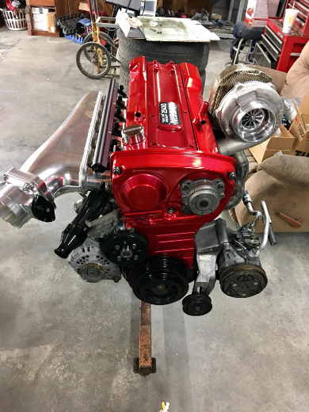
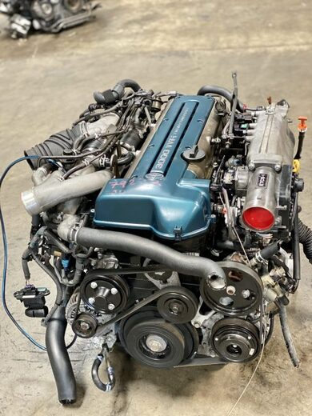

Home
Produtos
Contato

RB26
Motor de seis cilindros em linha de 2,6 L (2.568 cc) fabricado pela Nissan, para uso no Nissan Skyline GT-R 1989-2002.

2JZ
motor em linha, seis cilindros, duplo comando de válvulas no cabeçote intercooler a ar, duplo turbocompressor,
VTEC
Um sistema desenvolvido pela Honda para melhorar a eficiência volumétrica de um motor de combustão interna de quatro tempos,